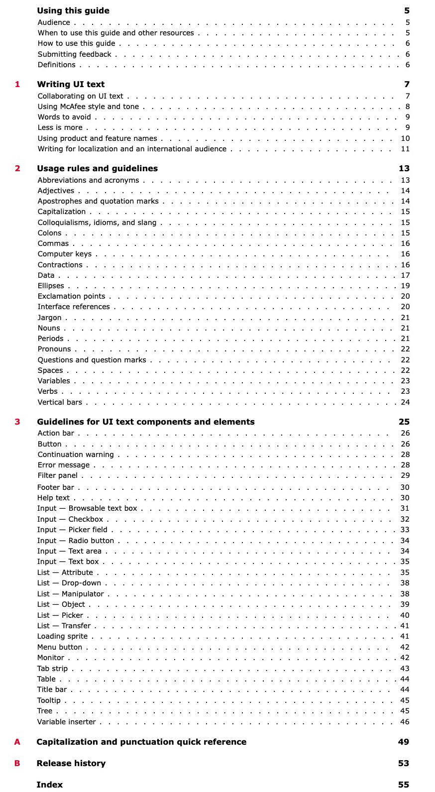
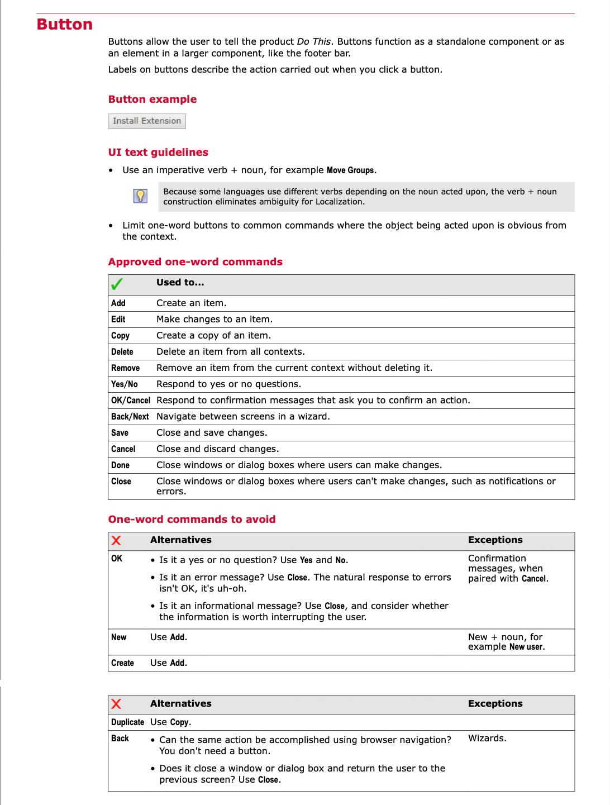
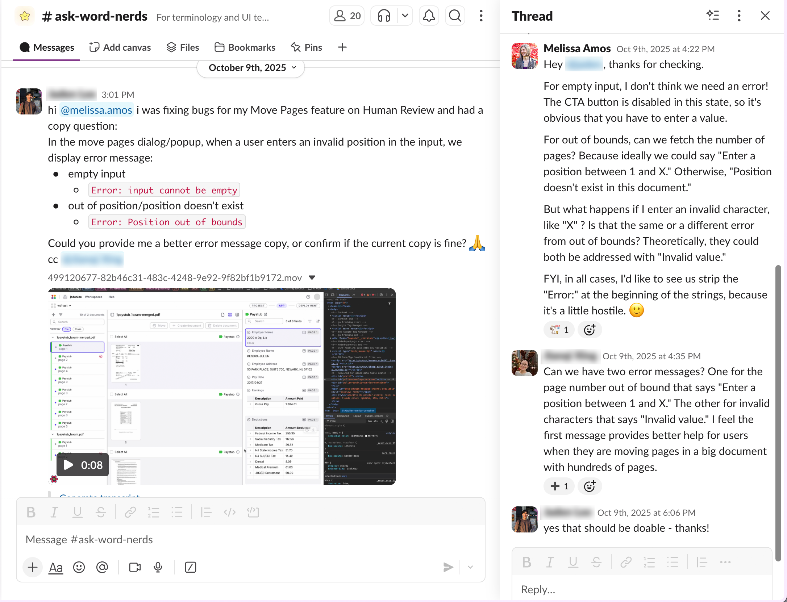
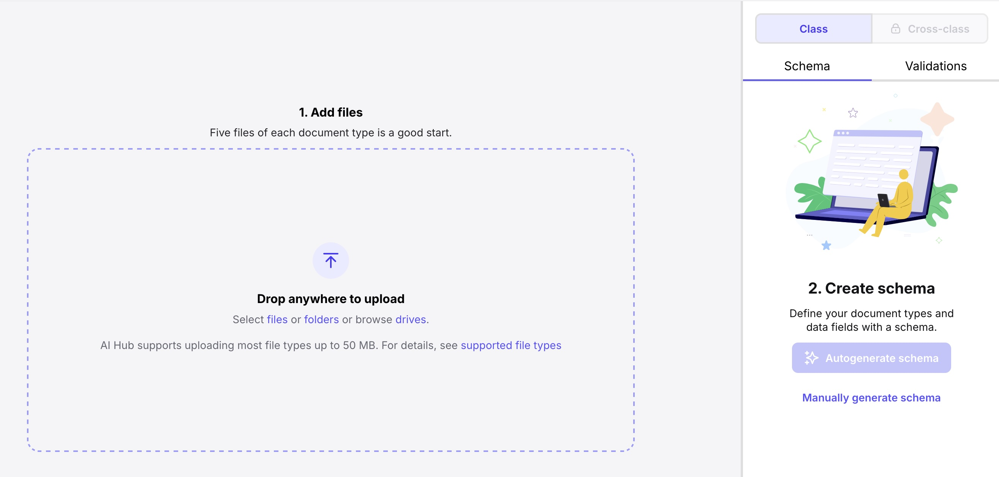
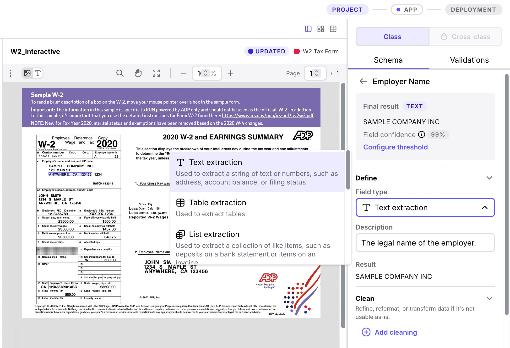
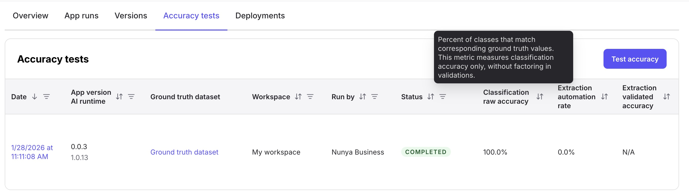

Content design & UI writing
Content design shapes how users experience and understand products through microcopy, UI patterns, and interaction flows. I establish UI content standards, build real-time content design capacity across organizations, and apply content design principles to reduce cognitive load in complex workflows.
Establishing content design standards (McAfee)
McAfee lacked UI content standards, resulting in inconsistent interface language across products. I self-directed a comprehensive study of GUI style guides, synthesized industry best practices with established McAfee style, and pioneered the company's first UI text guidelines covering voice and tone, component usage guidelines, and localization best practices. The guide became the authoritative reference adopted across the organization.

UI text style guide table of contents.

UI text style guide button label guidelines.
Building real-time content design capacity (Instabase)
Recognizing the need for real-time content design guidance in an Engineering-driving environment, I founded an #ask-word-nerds Slack channel where implementation teams could request guidance on UI text, error messages, and microcopy on demand. The channel became the authoritative resource for content design questions, preventing inconsistent implementations and building content design awareness across the organization. The channel handled complex decisions like error message clarity, tooltip strategy, and form validation messaging.

Real-time content design collaboration addressing error message clarity and user experience concerns.
Applying content design principles to complex workflows (Instabase)
As the authoritative voice for the enterprise automation product, I owned all related UI content. I designed clear interface text for complex AI document processing workflows—from empty states to field names to help text to error messages—applying content design principles to reduce cognitive load and guide users through multi-step technical tasks.

Empty state with getting started guidance. I recommended numbered steps to indicate order of operations, and advised disabling the Autogenerate schema button until files are added.

Main project editing interface. I wrote all text, from labels to options to descriptions.
Runtime configuration interface, demonstrating clear instructional guidance for a complex feature.

Accuracy testing interface. I wrote all text and recommended hover text to define key terms.
Business impact
- Established authoritative content design resources adopted organization-wide.
- Created reusable UI text patterns adapted across product teams.
- Scaled content design expertise across Engineering, Product, and Design without adding headcount.
- Prevented inconsistent UI language through proactive collaboration.
- Applied content design principles to reduce cognitive load across technically complex workflows.
- Improved user experience and reduced support burden through helpful error messages and UI guidance.